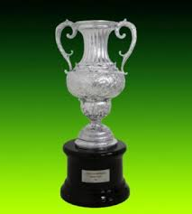

A primeira edição do campeonato consagrou o Atlético Mineiro como o primeiro clube campeão brasileiro. A segunda edição só foi realizada 22 anos depois e consagrou o Bahia como campeão. As edições posteriores demonstraram um certo domínio dos clubes do estado de São Paulo, que venceram 7 de 10 edições do período em que a competição era denominada de Taça Brasil. A partir de 1967, foi comum termos mais de uma equipe campeã nacional. Isto porque a CBD (Confederação Brasileira de Desportos, entidade responsável pelo futebol nacional na época e precursora da atual CBF) passou a reconhecer o Torneio Roberto Gomes Pedrosa (denominado oficialmente como Taça de Prata) como competição a nível nacional, em igualdade com a Taça Brasil, nesse sentido, mas em seus boletins oficiais entre 1971 e 1975, a CBD colocava as edições do Torneio Roberto Gomes Pedrosa/Taça de Prata[nota 1] em igualdade de condições com as edições posteriores do Campeonato Brasileiro, apenas mantendo os nomes próprios, excluindo esta informação a partir do boletim de 1976, nunca tendo incluído a Taça Brasil na relação de campeonatos brasileiros em seus boletins oficiais neste período.
Em 1967, o Palmeiras conquistou as duas competições, passando a ser considerado oficialmente bicampeão brasileiro a partir da unificação da Taça Brasil e do Torneio Roberto Gomes Pedrosa com o Campeonato Brasileiro em 2010. Em 1968, acabamos por ter dois campeões: o Botafogo, que conquistou a Taça Brasil daquele ano e o Santos, que conquistou a Taça de Prata.
A partir de 1969, a Taça de Prata tornou-se a única competição de clubes a nível nacional, consagrando Palmeiras e Fluminense como campeões, e sendo responsável por dar origem ao Campeonato Nacional de Clubes, em 1971. Porém, as edições da Taça Brasil e do Torneio Roberto Gomes Pedrosa/Taça de Prata foram reconhecidas pela Confederação Brasileira de Futebol (CBF) como Campeonato Brasileiro em 2010, embora a antiga CBD já reconhecesse o Torneio Roberto Gomes Pedrosa em sua época e nos primeiros anos da década de 1970. Antes da adoção do nome atual, em 1989, o Campeonato Brasileiro também foi oficialmente designado de Copa Brasil, Taça de Ouro e "Copa União" (nome fantasia), e posteriormente em 2000, foi denominado Copa João Havelange. O campeonato também contou com a utilização de uma enorme variedade de fórmulas de disputa diferentes até a edição de 2002. A fórmula de disputa do certame foi padronizada somente em 2003, quando foi adotado o sistema de pontos corridos com todas as equipes se enfrentando em turno e returno.

Desde 1937, o Campeonato Brasileiro já consagrou 17 clubes diferentes como campeão brasileiro: Palmeiras (12 vezes);
Santos (8 vezes); Corinthians e Flamengo (7 vezes);
São Paulo (6 vezes);
Cruzeiro, Fluminense e Vasco da Gama (4 vezes cada);
Atlético Mineiro, Internacional e Botafogo (3 vezes);
Bahia e Grêmio (2 vezes cada);
Athletico Paranaense, Coritiba, Guarani e Sport (1 vez cada).
A partir da adoção dos pontos corridos, foram 9 os clubes campeões: Corinthians e Palmeiras (4 vezes);
Cruzeiro, Flamengo e São Paulo (3 vezes cada);
Fluminense (2 vezes);
Santos, Atlético Mineiro e Botafogo (1 vez cada).